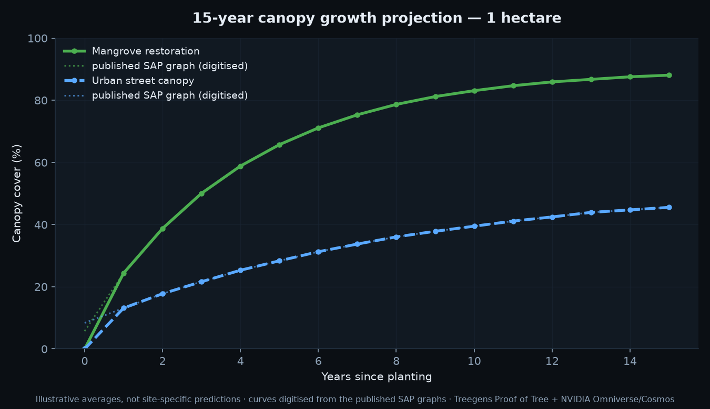
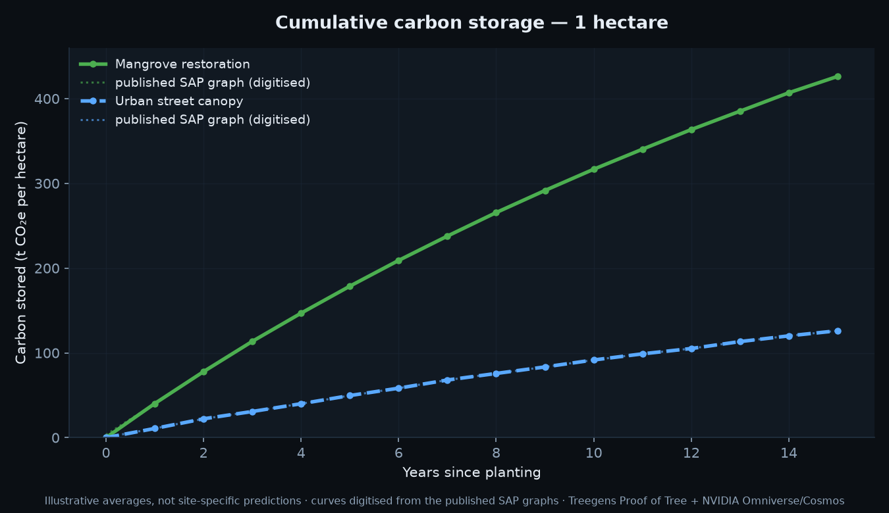
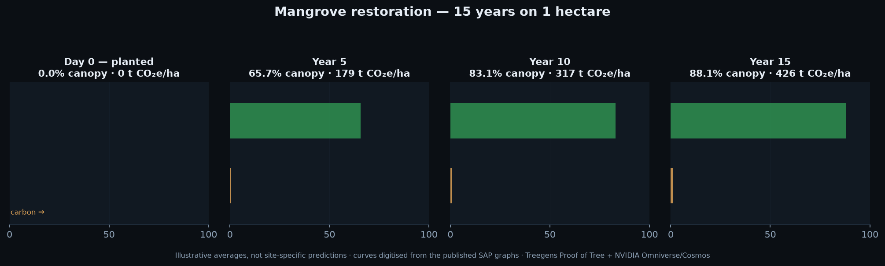
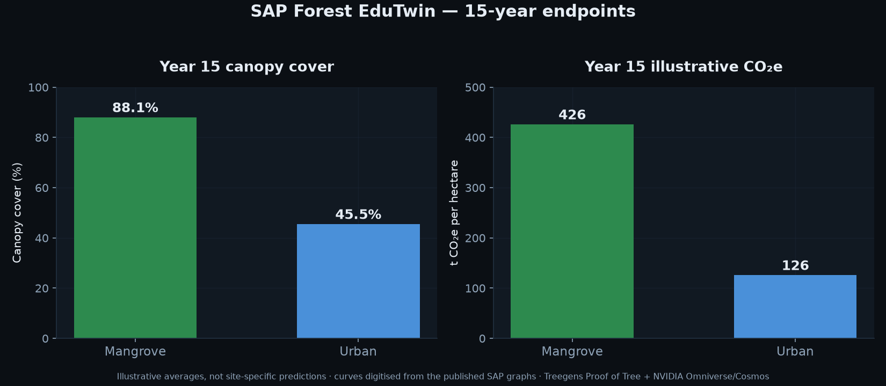
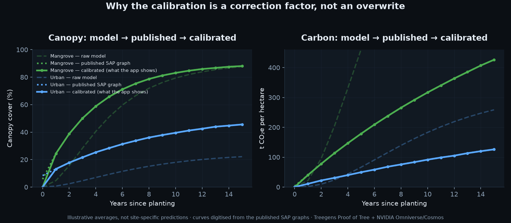

S.A.P. pairs a local-first forest digital twin with a transparent green-initiative treasury. Every projected canopy curve is calibrated against published growth graphs and verifiable on disk. Every fee is split by a published policy and can be read back cent by cent. Nothing leaves the machine, and nothing is claimed as a site-specific forecast.
Illustrative averages, not site-specific predictions.
The twin, the model and the treasury are not a pitch deck. Each is running code with tests behind it. Here is what each one is responsible for.
A Three.js and Leaflet twin where a Treegens claim becomes an instanced grove on a real map.
The canopy and carbon curves are digitised from the published SAP graphs, then calibrated year by year.
Integer-cent pools, an idempotent ledger, and a fee split published in basis points.
The routing rule is not a slogan and not a promise. It is a stored policy with three integer buckets, a public read endpoint, and a split function that cannot lose or invent a cent. Change it with three environment variables and the sums must still total 10000 bps or the service refuses to start.
Integer cents in, three integer buckets out. splitByPolicy(amountCents, policy)
floors the tree and liquidity buckets, then gives the remainder to platform, so the three
parts always sum exactly to the input amount.
Paid to Treegens for real planting and verification of the funded stems.
Deepens the liquidity of the $ASIMOV coin itself, on Solana, where the mint already lives.
Runs the platform: the twin, the EduTwin, the agent council and the free tier.
The tree fund is a payment for planting and verification services already rendered. That framing keeps it outside securities territory, because the buyer receives a real outcome (a planted, verified stem) rather than a promise of appreciation.
The treasury records settlement intent. A human-reviewed settler executes it.
No HTTP route can place an order, and no route can move a user's own funds through our pool.
There is deliberately no payout, withdraw or transfer method.
Every settlement is keyed on attributionId. A retried webhook, a double click, or a replayed queue message settles once. The ledger write is atomic against the JSON store.
The live panel below queries the running backend. If the API is not up, the page falls back to the shipped defaults and says so plainly rather than pretending.
| Pool | Purpose | Destination | Policy share |
|---|---|---|---|
| eco | Real tree planting and verification | Treegens | 40% |
| asimovLiquidity | Depth for the $ASIMOV coin | Solana pool | 40% |
| treasury | Platform operations | Internal | 20% |
| owner | Creator share | Creator | n/a |
| referrer | Referral flywheel | Referrer | n/a |
| partner | Partner allocations | Partner | n/a |
1. Hyperliquid geoblocks United States residents, so the US audience cannot be routed through it by default. 2. A token-linked rewards programme attracts a Howey analysis, so tree payments are structured as payment for services rendered, not as investment returns. 3. We do not take custody and we do not route a user's own flow through our own pool - the treasury records intent and a reviewed human executes.
Every figure below was produced by forest_edutwin/tools/render_demo.py running
against the live calibrated model and the digitised reference graphs. The footer line on each
chart is baked into the render, not added by the web page.

Mangrove restoration reaches 88.1% canopy cover by year 15; urban street canopy reaches 45.5%. The dotted lines are the published SAP graphs, digitised. The solid lines are the calibrated model. They sit on top of each other.

Carbon is integrated from the canopy curve rather than assumed. Mangrove stores 426 tCO2e/ha by year 15, urban stores 126 tCO2e/ha. Area scales linearly, so a 10 hectare plot is ten times the curve.

Day 0 is exactly 0.0% canopy and 0 tCO2e/ha - nothing is planted, so nothing is claimed. Year 5 65.7% / 179 t. Year 10 83.1% / 317 t. Year 15 88.1% / 426 t. This panel is the narration spine for the physical-AI story.

The headline pair, side by side. Mangrove roughly doubles urban canopy cover and more than triples its carbon per hectare over the same 15-year window.

Left panel is canopy, right panel is carbon. In each, three curves: the raw model, the
digitised published SAP graph, and the calibrated result the app actually shows. Calibration
multiplies the raw model by k(t) = reference(t) / model_reference(t) for each
year. It corrects the model, it does not replace it, and year 0 stays at zero.
The reference data was digitised by hand from the published SAP graphs, then locked down by three small Python tools that live next to the model. Anyone can rerun them.
Converts a hand-read point list into the canonical CSV. It round-trips byte-identically: reading the CSV and writing it back produces the same bytes, so a silent edit to the reference data cannot slip through.
Runs the assertions that matter and exits non-zero on failure. Current result: PASS. Years 1 to 15 drift 0.0000; endpoints land within 0.07 percentage points of canopy and 0.92 tCO2e/ha of carbon; 10 hectares scales linearly; half-stocking yields 65.20% of the full-stocking result.
Confirms the digitised reference still matches the source it was taken from, so a stale graph cannot quietly underpin a published number. Current result: PASS.
Treegens currently ships no tree geometry - no species, no lat/lng, no health, no
canopy, no carbon. The adapter fills that gap with a documented, deterministic rule set:
stems from dealSize x phase, health from stage, biome from region,
position from the Treegens region centroids. Every derived value is flagged
derived: true and labelled as illustrative.
If a future Treegens schema ships real tree fields, they automatically win over the derivation.
The explainer asks a local model (Qwen2.5-1.5B, Gemma-2-2B or Phi-3-mini) and falls back to a deterministic explainer when offline. Nothing leaves the machine. There is no build-time dependency on a hosted LLM, and no model weights are bundled in the repo.
The calibration, the verification and the treasury ledger are all plain files on disk. You can read them with a text editor and check them by hand.
Three Treegens-style plots are open for funding. Each carries a verification method, because a tree that nobody checks is a claim, not a tree.
| Plot | Ecosystem | Area | Stems | Price per stem | Verification |
|---|---|---|---|---|---|
| TG-MANGROVE-001 | Mangrove restoration | 1.0 ha | 1,200 | $2.40 | Proof of Tree: before/after video, GPS, community check |
| TG-MANGROVE-002 | Mangrove restoration | 2.5 ha | 3,000 | $2.40 | Proof of Tree: before/after video, GPS, community check |
| TG-URBAN-001 | Urban street canopy pilot | 0.5 ha | 25 | $145.00 | Proof of Tree: before/after photo set, GPS, community check |
A 0.5 hectare urban street programme is 25 mature street trees with irrigation, pit preparation and maintenance, against 1,200 mangrove stems on one hectare. The per-stem price reflects the work, not a margin. Both curves still apply: urban street canopy is modelled separately and reaches 45.5% cover and 126 tCO2e/ha at year 15.
The liquidity leg and the treasury rail are deliberately separated. Pretending one chain does both is how projects end up with a token nobody can actually trade.
$ASIMOV is a Token-2022 mint on Solana: mint authority revoked, 6 decimals, supply 999,798,654.675747, 44 holders, first pool opened 2026-10-27. Roughly $1,611 of liquidity against roughly $6,532 market cap.
That is the venue the 40% liquidity bucket belongs to. The liquidity leg deepens the pool that already exists - it does not invent a new one and it does not imply a launch.
Hyperliquid is the USDC settlement rail and the intended future listing venue. The live API is verified keyless: 235 perps, 511 spot tokens, 349 spot pairs, and a published user fee schedule. Spot fee share on deployer tokens defaults to 100% with the remainder burned.
HIP-1 registers a token for spot trading. HIP-2 (Hyperliquidity) is the protocol-recognised LP with a real ladder: each level is the previous price rounded up by 0.3%, updated no more often than every 3 seconds, funded with USDC bid levels. No bespoke AMM - which is exactly why this does not look like wash trading.
A mainnet HIP-1 deployment runs a 31-hour Dutch auction with a 500 HYPE floor (roughly $40,000). Testnet first is the correct order, but the testnet faucet needs a prior mainnet deposit from the same address, and the email-login address differs between the two - so use a wallet address on both.
Trading is behind a four-key gate: a trading-enabled flag, a private key, an account address, and the SDK. All four must be present or every order path refuses. There is no hand-rolled EIP-712 signing - if the SDK is absent, nothing trades.
Builder codes and HIP-1 are complementary, not alternatives. HIP-1 captures the base
side (your token). Builder codes capture the quote side (USDC), capped at 1% spot and 0.1%
perps, and they need an ApproveBuilderFee from the user's main wallet.
NVIDIA/skills is 437 skills upstream. We curated 48 that match this project and installed them into the canonical skill store, OpenCode, all seven council agents, Claude Code, and the MCP layer.
Weather and climate AI. Data sources, diagnostics, prognostic forecasts and a deterministic 15-year forecast script - the layer that would make the carbon projection climate-driven instead of generic.
CAD to SimReady conversion, USD content services, the realtime viewer and USD performance tuning - the physical-AI pipeline that turns a real plot into a narrated 3D scene that stays smooth on 8GB.
Synthetic data generation, neural reconstruction, physics engine selection and video augmentation - the machinery behind the day-0 to year-15 growth storyboard.
Video generation for the narration layer, so the physical-AI story is told in motion rather than only in charts.
Blueprint deployment, RAGAS quality evaluation and latency profiling - a direct overlap with the existing SHADDAI RAG brain MCP, which is now benchmarked against it.
6D pose and depth perception - the path to measuring a real plot and comparing it against the twin instead of trusting a derivation.
Dataset conversion and validation, AutoML, the DEFT improvement loop, KPI and gap analysis, and the token-efficient stage-card pattern - a 67 to 91 percent token reduction, which is the right answer to our low-context budget.
The skill finder routes any NVIDIA request to the right skill, the skill-card generator gives each one a reviewable governance card, and data-designer designs the SAP dataset schema.
The host is a ThinkPad with an Intel HD Graphics 620 and 1 GB of VRAM. There are no NVIDIA devices in the hardware inventory. So the 29 GPU-flagged skills are installed and usable as documentation and workflow design today, but their model steps cannot run locally until a real NVIDIA GPU is attached. The other 19 are pure knowledge and instruction skills and work right now. This is also why TensorRT, the NVIDIA container toolkit and the NVIDIA Docker images were ruled out for this build.